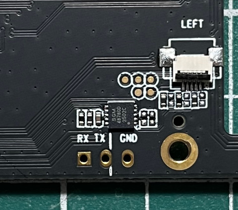
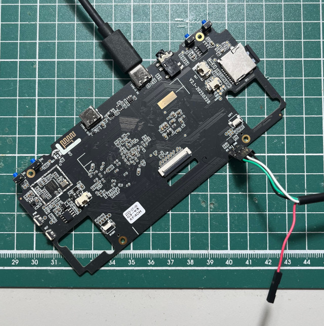

腳位


DDR V2.08 20220817
In
LP3,1024MB,333MHz
bw col bk row cs dbw
32 10 8 14 2 32
cs1 row:14
OUT
Boot1 Release Time: Jan 17 2022 10:48:40, version: 1.35
ROM VER:0x56313030, 18
hamming_distance:3326 3330 3
chip_id:524b3326_0,0
ChipType = 0x12, 778
No.1 FLASH ID:1 ff ff ff ff ff
mmc2:cmd19,100
SdmmcInit=2 0
BootCapSize=2000
UserCapSize=7456MB
FwPartOffset=2000 , 2000
mmc0:cmd5,20
SdmmcInit=0 0
BootCapSize=0
UserCapSize=59638MB
FwPartOffset=0 , 0
StorageInit ok = 94144
SecureMode = 0
Secure read PBA: 0x4
Secure read PBA: 0x404
Secure read PBA: 0x804
Secure read PBA: 0xc04
Secure read PBA: 0x1004
SecureInit ret = 0, SecureMode = 0
atags_set_bootdev: ret:(0)
GPT part: 0, name: uboot, start:0x4000, size:0x2000
GPT part: 1, name: trust, start:0x6000, size:0x2000
GPT part: 2, name: emuelec, start:0x8000, size:0x400000
GPT part: 3, name: swap, start:0x408000, size:0x100000
GPT part: 4, name: storage, start:0x508000, size:0x987fdf
find part:uboot OK. first_lba:0x4000.
find part:trust OK. first_lba:0x6000.
LoadTrust Addr:0x6000
No find bl30.bin
Load uboot, ReadLba = 4000
Load OK, addr=0x200000, size=0xfddcc
RunBL31 0x40000 @ 159385 us
INFO: Preloader serial: 5
NOTICE: BL31: v2.3():v2.3-530-g0152b20d0:derrick.huang
NOTICE: BL31: Built : 17:00:22, Feb 2 2023
NOTICE: BL31:Rockchip release version: v1.0
INFO: ARM GICv2 driver initialized
INFO: Using opteed sec cpu_context!
INFO: boot cpu mask: 1
INFO: plat_rockchip_pmu_init: pd status f00e
INFO: BL31: Initializing runtime services
INFO: BL31: Initializing BL32
I/TC:
I/TC: OP-TEE version: 3.13.0-743-gb5340fd65 #hisping.lin (gcc version 10.2.1 20201103 (GNU Toolchain for the A-profile Architecture 10.2-2020.11 (arm-10.16))) #1 Mon Aug 28 10:48:15 CST 2023 aarch64
I/TC: Primary CPU initializing
I/TC: Primary CPU switching to normal world boot
INFO: BL31: Preparing for EL3 exit to normal world
INFO: Entry point address = 0x200000
INFO: SPSR = 0x3c9
U-Boot 2017.09-g7d03482-dirty #pangjianwen (Jul 03 2025 - 14:00:11 +0800)
Model: Rockchip RK3326 EVB
MPIDR: 0x80000000
PreSerial: 5, raw, 0xff178000
DRAM: 1014 MiB
Sysmem: init
Relocation Offset: 3da62000
Relocation fdt: 3bc571e8 - 3bc58cd3
CR: M/C/I
Using default environment
DM: v1
dwmmc@ff370000: 1, dwmmc@ff390000: 0
Bootdev(atags): mmc 0
MMC0: High Speed, 52Mhz
PartType: EFI
reading rf3640g3ka.dtb
108097 bytes read in 4 ms (25.8 MiB/s)
DTB(Distro): rf3640g3ka.dtb
I2c0 speed: 400000Hz
PMIC: RK8170 (on=0x80, off=0x00)
vdd_logic init 1150000 uV
vdd_arm init 1250000 uV
io-domain: OK
arm clk value is 816000000
Could not find baseparameter partition
Model: Rockchip rk3326 evb lpddr3 v12 board for linux
MPIDR: 0x80000000
DC is valid
charge_red_gpio is valid
charge_blue_gpio is valid
in is_rk817_bat_first_pwron value=16
first powen on ...
Enable charge animation display
charge_animation: soc = 95, voltage = 4046
No misc partition
boot mode: None
Exit charge: due to charger offline
CLK: (sync kernel. arm: enter 816000 KHz, init 816000 KHz, kernel 816000 KHz)
apll 816000 KHz
dpll 664000 KHz
cpll 24000 KHz
npll 1188000 KHz
gpll 1200000 KHz
aclk_bus 200000 KHz
hclk_bus 150000 KHz
pclk_bus 100000 KHz
aclk_peri 200000 KHz
hclk_peri 150000 KHz
pclk_pmu 100000 KHz
Net: Net Initialization Skipped
No ethernet found.
Hit key to stop autoboot('CTRL+C'): 0 -------startup_rumble------
Could not find misc partition
optee api revision: 2.0
TEEC: Waring: Could not find security partition
Not AVB images, AVB skip
android_image_load_by_partname: Can't find part: boot
Android image load failed
Android boot failed, error -1.
## Booting FIT Image FIT: No boot partition
FIT: No fit blob
FIT: No FIT image
Could not find misc partition
Could not find storage part
GUID Partition Table Header signature is wrong: 0xFFFFFFFFFFFFFFFF != 0x5452415020494645
switch to partitions #0, OK
mmc1 is current device
Scanning mmc 1:1...
switch to partitions #0, OK
mmc0(part 0) is current device
Scanning mmc 0:3...
Found /extlinux/extlinux.conf
Retrieving file: /extlinux/extlinux.conf
reading /extlinux/extlinux.conf
211 bytes read in 1 ms (206.1 KiB/s)
1: EmuELEC
Retrieving file: /KERNEL
reading /KERNEL
30849032 bytes read in 667 ms (44.1 MiB/s)
bruce --append: boot=UUID=0307-0350 disk=UUID=0100636b-5b12-40a7-a881-2a78cb681c22 quiet console=ttyFIQ0 console=tty0 net.iframes=0 fbcon=rotate:3 ssh consoleblank=0
Retrieving file: /rf3640g3ka.dtb
reading /rf3640g3ka.dtb
108097 bytes read in 3 ms (34.4 MiB/s)
FIT: No boot partition
No resource file: logo.bmp
reading logo.bmp
512 bytes read in 1 ms (500 KiB/s)
FIT: No boot partition
No resource file: logo.bmp
failed to load bmp logo.bmp
reading logo.bmp
921654 bytes read in 21 ms (41.9 MiB/s)
Rockchip UBOOT DRM driver version: v1.0.1
Using display timing dts
dsi@ff450000: detailed mode clock 30000 kHz, flags[a]
H: 0640 0790 0840 0990
V: 0480 0500 0506 0518
bus_format: 100e
VOP:0xff460000 update mode to: 640x480p59, type: MIPI0
VOP:0xff460000 set crtc_clock to 30000KHz
final DSI-Link bandwidth: 198 Mbps x 4
Fdt Ramdisk skip relocation
No misc partition
## Flattened Device Tree blob at 0x08300000
Booting using the fdt blob at 0x08300000
Using Device Tree in place at 0000000008300000, end 000000000831d640
FIT: No boot partition
No resource file: logo_kernel.bmp
reading logo_kernel.bmp
512 bytes read in 1 ms (500 KiB/s)
FIT: No boot partition
No resource file: logo_kernel.bmp
failed to load bmp logo_kernel.bmp
reading logo_kernel.bmp
921654 bytes read in 21 ms (41.9 MiB/s)
WARNING: could not set reg FDT_ERR_BADOFFSET.
## reserved-memory:
drm-logo@00000000: addr=3df00000 size=386000
ramoops@110000: addr=110000 size=f0000
Adding bank: 0x00200000 - 0x08400000 (size: 0x08200000)
Adding bank: 0x08c00000 - 0x40000000 (size: 0x37400000)
Total: 1730.186/2025.745 ms
Starting kernel ...
I/TC: Secondary CPU 1 initializing
I/TC: Secondary CPU 1 switching to normal world boot
I/TC: Secondary CPU 2 initializing
I/TC: Secondary CPU 2 switching to normal world boot
I/TC: Secondary CPU 3 initializing
I/TC: Secondary CPU 3 switching to normal world boot
[ 2.598397] fiq_debugger fiq_debugger.0: IRQ fiq not found
[ 2.598475] fiq_debugger fiq_debugger.0: IRQ wakeup not found
[ 2.598514] fiq_debugger_probe: could not install nmi irq handler
[ 3.213572] rockchip-usb2phy ff2c0000.syscon:usb2-phy@100: IRQ index 0 not found
[ 3.227471] rkvdec_init:1239: failed on clk_get clk_cabac
[ 3.227560] rkvdec_init:1242: failed on clk_get clk_hevc_cabac
[ 3.227704] mpp_rkvdec ff440000.hevc: shared_video_cabac is not found!
[ 3.227733] rkvdec_init:1270: No cabac reset resource define
[ 3.227766] mpp_rkvdec ff440000.hevc: shared_video_hevc_cabac is not found!
[ 3.227793] rkvdec_init:1273: No hevc cabac reset resource define
[ 3.227889] mpp_rkvdec ff440000.hevc: px30_workaround_combo_init dte_addr 03e0e000
[ 3.231194] mpp_vdpu2 ff442400.vdpu: px30_workaround_combo_init dte_addr 03e14000
[ 3.248478] arm-scmi firmware:scmi: Failed. SCMI protocol 22 not active.
[ 3.268691] dw-mipi-dsi-rockchip ff450000.dsi: failed to find panel or bridge: -517
[ 3.481436] rk817-battery rk817-battery: fb_temperature missing!
[ 3.481535] rk817-battery rk817-battery: energy_mode missing!
[ 3.481570] rk817-battery rk817-battery: zero_reserve_dsoc missing!
[ 3.509707] rk817-charger rk817-charger: power_dc2otg missing!
[ 3.509803] rk817-charger rk817-charger: sample_res missing!
[ 3.509834] rk817-charger rk817-charger: otg5v_suspend_enable missing!
[ 3.509864] rk817-charger rk817-charger: gate_function_disable missing!
[ 3.557369] arm-scmi firmware:scmi: Failed. SCMI protocol 17 not active.
[ 3.560521] rockchip,bus bus-apll: Failed to get leakage
[ 3.577297] rk-multicodecs rk817-sound: ASoC: Property 'rockchip,audio-routing' does not exist or its length is not even
[ 3.637770] mali ff400000.gpu: Failed to get gpu_leakage
[ 3.644682] rockchip-dmc dmc: Failed to get ddr_leakage
[ 3.647102] rockchip-dmc dmc: failed to get vop bandwidth to dmc rate
[ 3.647175] rockchip-dmc dmc: failed to get vop pn to msch rl
[ 3.680805] devfreq dmc: Couldn't update frequency transition information.
RuiSuo:~ #